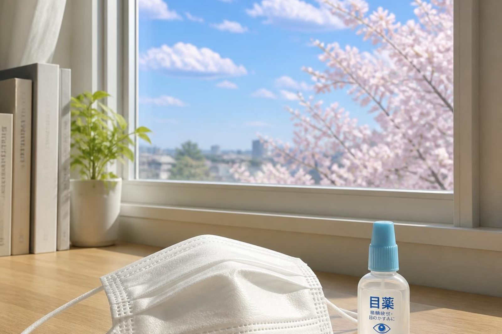

大人になってから、急にアレルギーが出ることはありますか？
A. 回答あります。むしろ花粉症は、成人してから発症する方のほうが多いとされています。食物アレルギーも、大人になってから出ることがあります。「今まで平気だったから、これはアレルギーではないはず」という思い込みが、対応を遅らせることがあります。ただし、大人で新しく出た症状の場合、アレルギー以外の原因が隠れていることもあるため、まず確かめることが大切です。

大人になってから出やすいもの
| 特徴 | |
|---|---|
| 花粉症 | 成人での発症が多く、引っ越しや環境の変化をきっかけに出ることもあります |
| 通年性の鼻炎 | ダニ・ハウスダストなど。住まいの変化が関わることがあります |
| 食物アレルギー | 果物や野菜で口の中がかゆくなるもの、甲殻類・小麦など。運動や薬と組み合わさって出るものもあります |
| 動物のアレルギー | 飼いはじめたあとに出ることがあります |
| じんましん | 原因がはっきりしないものも多くあります |
なぜ今まで平気だったのに出るのか
体がある物質を「反応すべきもの」と覚えるまでには、一定の期間の接触が必要とされています。長年その物質に接してきた結果、あるときから反応が起きるようになる、という経過をたどることがあります。そのため、「今まで大丈夫だった」ことは、これからも大丈夫という保証にはなりません。
引っ越し、転職、ペットを飼いはじめた、住まいの環境が変わったといった生活の変化がきっかけになることもあります。
アレルギーではないかもしれない場合
大人になってから出た症状では、アレルギー以外の原因が背景にあることもあります。次のような場合は、そちらを確かめることが先になります。
アレルギー以外を考える手がかり
- 片側だけの鼻づまりが続く
- 血の混じった鼻水が出る
- 熱をともなう、または顔の痛みがある
- 体重が減っている、だるさが続く
- 新しい薬を飲みはじめてから症状が出た
- 皮膚の症状に、発熱や関節の痛みをともなう
これらに当てはまる場合は、市販薬で様子を見るのではなく、一度ご相談ください。
すぐに受診が必要な症状
- 息が苦しい、のどが締めつけられる感じ
- 全身のじんましんに、腹痛や吐き気をともなう
- 血の気が引く、めまいがする
これらは強い全身の反応が起きている可能性があります。ためらわず119番を呼んでください。食べたあと、運動したあと、蜂に刺されたあとなどに起きることがあります。
市販薬で抑え続けることについて
症状が軽ければ、市販薬で乗り切るのも一つの方法です。ただし、次のような場合は一度ご相談いただくほうがよいと考えます。
- 1か月以上、市販薬を使い続けている
- 使っていても、日常生活に支障が出ている（眠れない、集中できない）
- 点鼻薬を使う回数が増えている
- 何が原因かわからないまま抑えている
原因がわかると、薬に頼る量そのものを減らせる場合があります。また、他の病気で飲んでいる薬との組み合わせを確認する必要がある方もいらっしゃいます。
当院での対応
当院はアレルギー科を標榜しており、原因を調べる採血検査を行っています。また、内科・呼吸器内科もあわせて標榜しているため、アレルギー以外の原因が考えられる場合にも、そのまま調べることができます。「何科に行けばよいかわからない」という段階でご相談いただいてかまいません。
当院はかかりつけ医として、他の医療機関での受診状況や、飲んでいる薬を把握したうえで対応しています。他院で処方されている薬がある方は、お薬手帳をお持ちください。
受診のときに伝えていただきたいこと
- いつごろから症状が出はじめたか
- どんなときに強くなるか（季節、場所、食事のあと、など）
- 生活で変わったこと（引っ越し、転職、ペット、住まいの改修など）
- 市販薬を使っているか、何をどのくらい
- 他の医療機関で飲んでいる薬
何科かわからない段階でもご相談いただけます。
最終更新：2026年8月27日